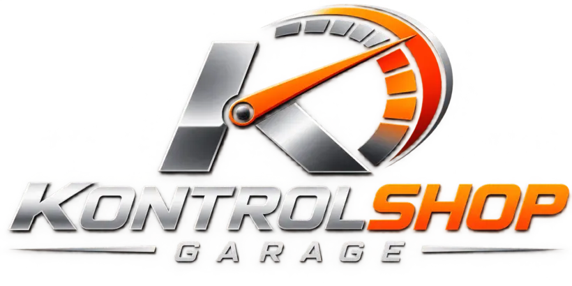

Ateliers mécaniques et garages
kontrolshop Garage
De l'arrivée du véhicule jusqu'à la facture payée, chaque étape est suivie — sans papier qui se perd entre le comptoir et l'atelier.
- Bons de travail complets : tâches, photos à l'arrivée, véhicule et historique du client au même endroit.
- Poinçon des mécaniciens sur chaque bon, en temps réel, depuis le téléphone ou la tablette.
- Inventaire de pièces avec codes-barres, étiquettes QR imprimables et alertes de stock bas.
- Recherche de pièces chez vos fournisseurs habituels : comparez prix et disponibilité, sans quitter la commande.
- Kits (ex. changement d'huile) facturés à prix fixe, qui sortent chaque pièce du stock.
- Rendez-vous en ligne, soumissions, et courriel « votre véhicule est prêt » au client.
ExempleUn client réserve en ligne un changement d'huile. Le bon est prêt à son arrivée ; le mécanicien poinçonne, ajoute le kit — filtre et huile sortent de l'inventaire — et la facture part par courriel dès que c'est fini.
Tout sur kontrolshop Garage →